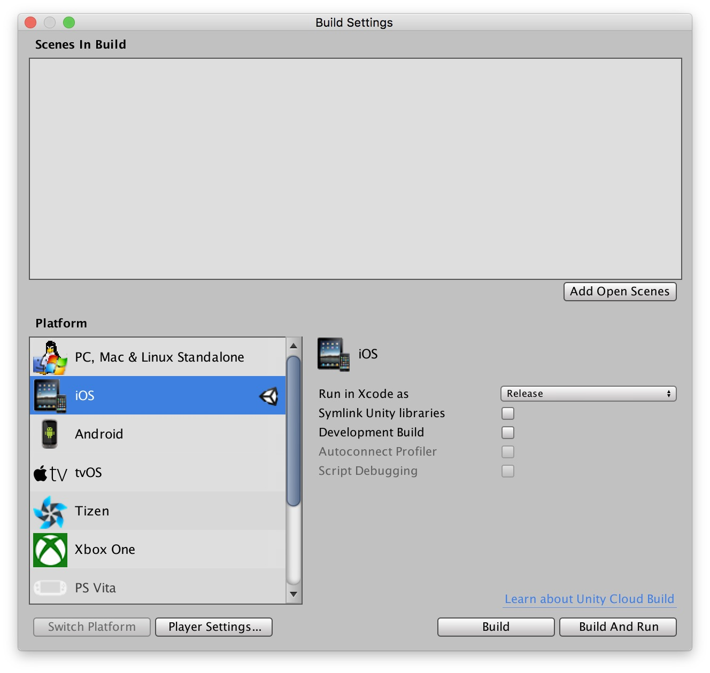
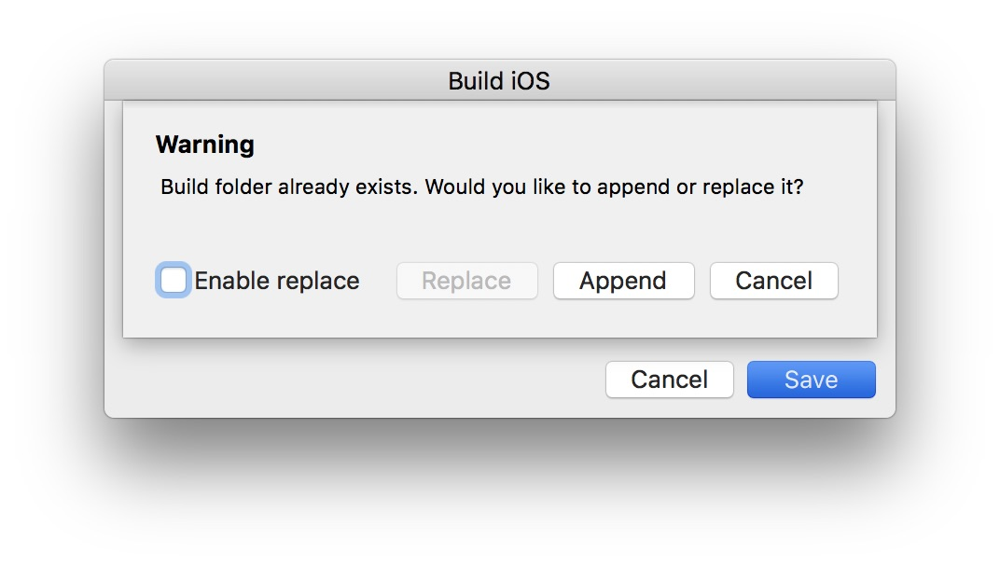

Summary
The Neer.By SDK can be integrated with a Unity project, with the following limitations:
- Hardware and Virtual Beacon-based interactions are not available
- User properties cannot be set from Unity code
How-to
- Create your Unity project as usual
- From the
Filemenu selectBuild Settings...

- From the list select
iOS - Click
Build - Select a directory to save your built project
- Click
Save
This step will create a complete Xcode project where the SDK can be included following the instructions from the Include the SDK in your project and Using the SDK. Using Cocoa pods is the recommended integration method. Do not forget to include the proper key in the Info.plist path.
Notes
- The app delegate class file for your newly created project is
Classes/UnityAppController.mm - When using Cocoa Pods integration, use the
.xcworkspacefile instead of the.xcodeprojfile to build the iOS target - If you need to rebuild your project, select the
Appendmode. If you selectReplaceyou have to restart the integration from scratch
